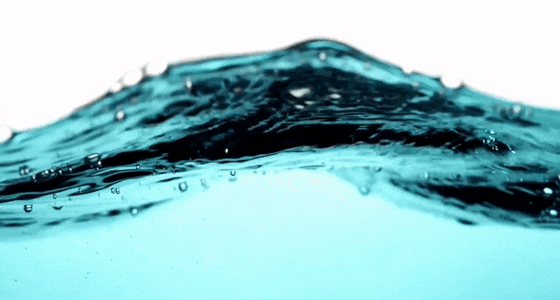

Enagic 水机：一机多用
Enagic 水机通过电解过程可以生成多种不同 pH 值的功能水，满足饮用、烹饪、清洁和美容等各种需求。

Enagic 水机可以生成多种不同 pH 值的功能水，满足不同需求

了解 Enagic 水机生成的多种功能水及其特点和用途
Enagic 水机通过电解过程可以生成多种不同 pH 值的功能水，满足饮用、烹饪、清洁和美容等各种需求。
Enagic 水机可以生成多种不同 pH 值的功能水，满足不同需求
自来水是经过处理的市政供水，通常含有氯和各种矿物质。
自来水经过 Enagic 水机处理后，可以去除氯和其他有害物质，同时保留有益矿物质。
纯净水是通过蒸馏、反渗透或其他方法处理的水，几乎不含任何矿物质。
与纯净水不同，Kangen Water 保留了有益矿物质，同时具有碱性和抗氧化特性。
强酸性水是 Enagic 水机生成的一种功能水，具有强大的消毒和杀菌能力。
用于消毒厨房用具、表面清洁、杀菌和去除农药残留。
碱性饮用水是 Kangen Water 的核心产品，具有碱性 pH 值和抗氧化特性。
日常饮用、烹饪、冲泡咖啡和茶、浇花植物，以及为宠物提供饮用水。
美容水是 Enagic 水机生成的弱酸性水，pH 值接近皮肤的自然 pH 值。
用于面部清洁、爽肤、洗发、护发和皮肤护理。
中性水是 Enagic 水机生成的 pH 值接近 7.0 的水，不含氯和其他有害物质。
用于服药和婴儿配方奶粉。